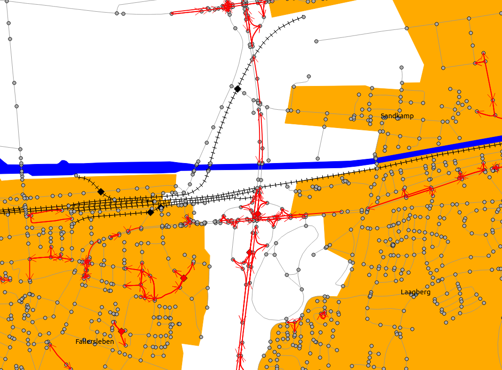
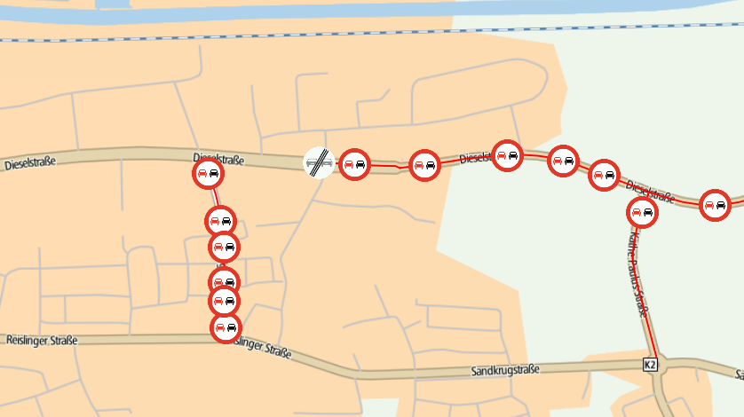
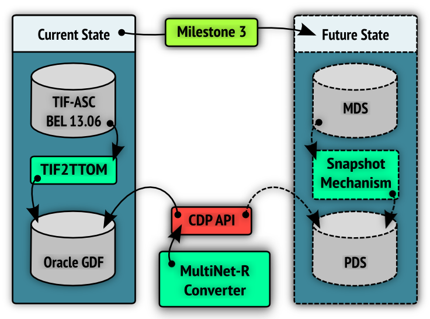
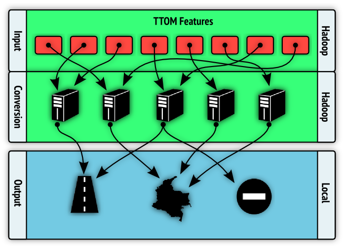
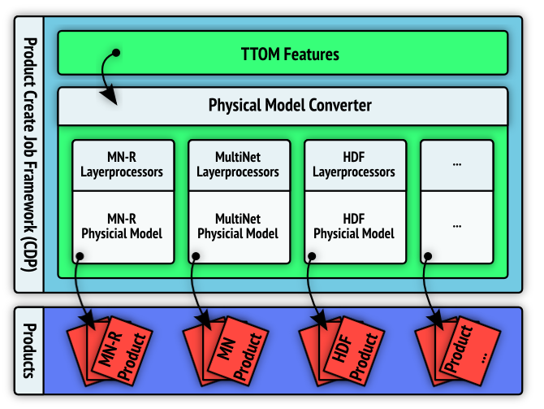
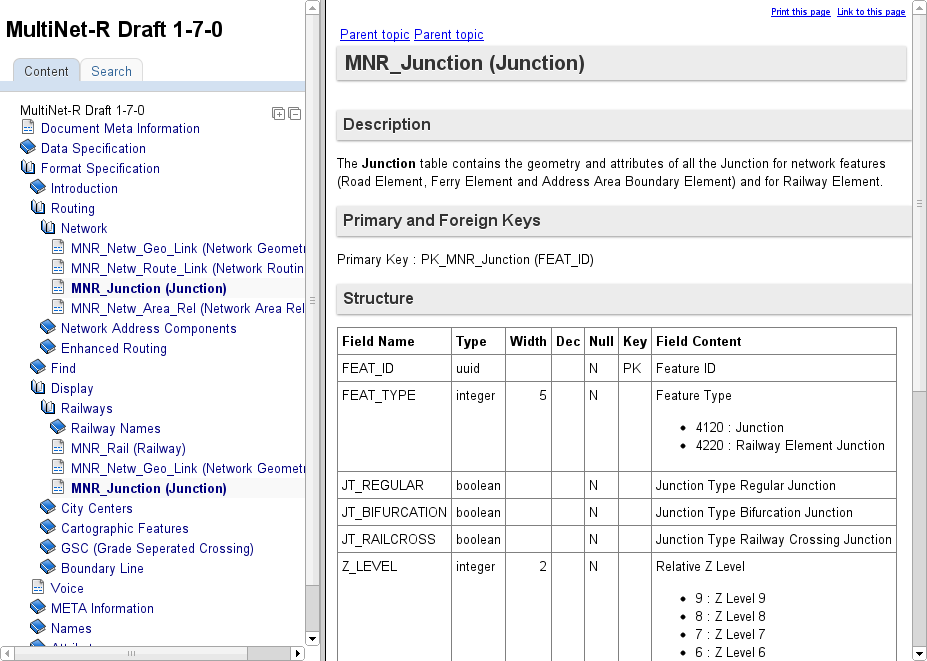
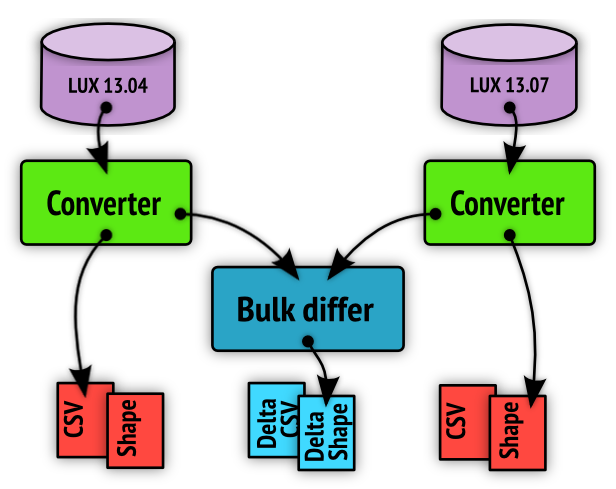
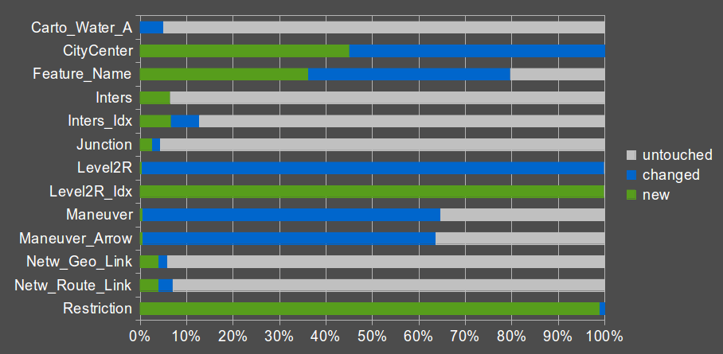
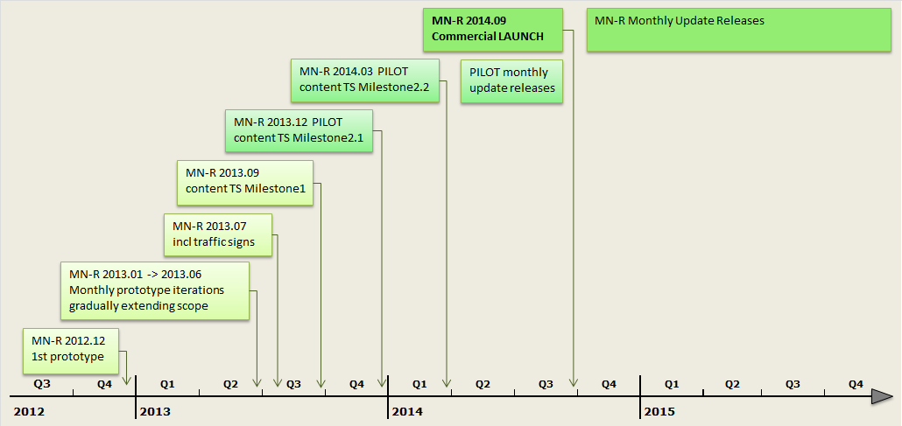
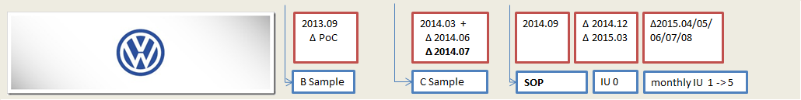

Our customers:
Your MultiNet Suite is far too complex. It’s an assembly kit that takes too much time and effort to compile.
Can you optimize your delivery for a direct load into my RDBMS?
I need frequent fresh map updates that are straightforward to integrate.
Where is the map updated and what remained stable?
MultiNet-R Requirements
- One easy integrated product
- Seamed continental layers
- Adhering to core design principles
- Machine readable specification
- RDBMS loadable format with loaders
- Frequent map builds with delta records
- Stable feature IDs
MultiNet-R Requirements
- One easy integrated product
- Seamed continental layers
- Adhering to core design principles
- Machine readable specification
- RDBMS loadable format with loaders
- Frequent map builds with delta records
- Stable feature IDs
Current state: MultiNet
Split, overlapping & inconsistently modelled content

MN‑R content layer goals
- Data integration to optimize operational data intake process
- A consistent product model to improve ease of use and increase development speed
MN‑R content demo
Road network, maneuvers, index relevant areas live from Postgres
MN‑R content currently available
- Monthly prototype release cycle since start of 2013
- MN‑R content quickly follows TTOM content
- Level 1 road network (junctions and network elements)
- Level 2 road network (roads, intersections, freeway intersections)
- Maneuvers, restrictions and lanes
- City centers, administrative areas, hierarchical index
- Built up areas, water areas
- New TTOM name model integrated
- Truck restrictions are fully integrated in MN‑R (MN logistics content)
Traffic signs, overtaking restrictions
- Volkswagen asks for extra map content
- Traffic signs
- Overtaking restrictions
- Overtaking lanes
- Prototype data has been quickly captured, integrated in TIF, TTOM and MN‑R software stacks
- All content is fully integrated in MN‑R map
- Official D64 MN‑R prototype is available on FTP since July, 23rd!

MN‑R Volkswagen content demo
Traffic signs and overtaking restrictions
MN‑R integrated content - Conclusions
Once TTOM content is available in the master data store, it can quickly be provided in MN‑R. New content has been exclusively integrated in MN‑R (not in classic MultiNet).
The quality and content integration in MN‑R is constrained by what TTOM offers.
Several model optimizations to improve the ease of use (name model) have been successfully implemented.
Further model optimizations as proposed by the TTOM foundation team are not planned in and potentially endanger the MN‑R ease of use requirement.
MultiNet-R Requirements
- One easy integrated product
- Seamed continental layers
- Adhering to core design principles
- Machine readable specification
- RDBMS loadable format with loaders
- Frequent map builds with delta records
- Stable feature IDs
Geographical split
- 'MN Europe' = collection of 130 datasets
- Datasets borders cause features to be split or duplicated
- Different mechanisms to overcome dataset border limitations
MN‑R seamed continental layer demo

Seamed continental layers - Conclusions
Seaming is considerably better than MultiNet ever was!
There are however still visible border artefacts. The perfect seaming solution requires a continental TTOM as master editing platform.
Building MN‑R product partitions smaller than an entire continent is currently an unexplored challenge.
MultiNet-R Requirements
- One easy integrated product
- Seamed continental layers
- Adhering to core design principles
- Machine readable specification
- RDBMS loadable format with loaders
- Frequent map builds with delta records
- Stable feature IDs
Core design principles
- API driven: built on top of CDP
- Scalability: optimized for continental, batch processing
- Model driven: type safety to ensure data quality
API driven

Scalability - Distributed conversion
* requires TTOM to be in line with MultiNet-R model.
Scalability
Don't bring the data to the code,
bring the code to the data
- Using CDP infrastructure via Product-Create-Job
- Converter runs on a cluster of machines
- Built with proven opensource technologies
- Free vs. TIF2MN Oracle setup for $,$$$,$$$ USD
Scalability - Advantages
- More machines equals proportionally more performance
- Ability to make product faster
- Enforces us to write more straightforward (pure*) conversions
- Requires that TTOM resembles MultiNet-R (and viceversa)
* The conversion always gives the same result value given the same input, no inner state
TTOM in line with MN‑R - Why?
- Converter should be order independent
- Hard to aggregate multiple TTOM features into one MN‑R feature (unless associations are added)
- Hard to do spatial queries
Scalability - Some numbers
End-to-end conversion of BENELUXDEU
- 74,000,000 TTOM features input (= 70GB)
- 190,678,532 MN‑R features output (= 18GB)
- Normalized 85,618,965 features in 23 minutes
- Full conversion in about 11 hours
Model driven - Pluggable converter
Model driven
- MultiNet-R is defined as a physical model
- Converter itself is model agnostic
- Can contain multiple physical model converters
- More details on the physical model later
MultiNet-R architecture - conclusions
The first nextgen converter leverages CDP components to realise a future proof conversion process that improves on earlier developments and also provides foundations for future product converters.
Scalability is possible by having a TTOM model which is close to the MultiNet-R model, allowing for straightforward data transformations.
MultiNet-R Requirements
- One easy integrated product
- Seamed continental layers
- Adhering to core design principles
- Machine readable specification
- RDBMS loadable format with loaders
- Frequent map builds with delta records
- Stable feature IDs
Single source of truth
Specs and product from the same model
- Conversion code and product generated from model
- Product documentation generated from model
- Allows us to be RDBMS independent
- Independent of product (not MultiNet-R specific)
- Constraint based quality guarantees
- Real specifications change control
- Machine readable specifications available to customers
Flow

Model file
<table
alias="Junction"
description="The<b> Junction </b>table contains the geometry and attributes of all the Junction for network features (Road Element, Ferry Element and Address Area Boundary Element) and for Railway Element."
name="MNR_Junction">
<field name="FEAT_ID" nullable="false">
<uuid/>
<alias>Feature ID</alias>
</field>
<field name="FEAT_TYPE" nullable="false">
<enum enumname="Feature Type Junction"/>
<alias>Feature Type</alias>
</field>
...
<primarykey name="PK_MNR_Junction">
<field name="FEAT_ID"/>
</primarykey>
<foreignkeys/>
<uniquenesses/>
</table>Model contents
Content
A physical model defines tables with fields:
- Tables have primary, foreign and uniqueness constraints
- Fields have a datatype, can be enumeration, can be range constrained and nullable.
- The specifications documentation on tables and fields are contained in the model.
Model file
- Model is defined as an xml file
- Has an xsd schema defined
- Ordered and diffable
- Delivered to customers
Documentation from model
Documentation from model
When we want a new model.xml from EA, we use Modeltools:
- Has been adapted to support creation of model.xml
- Also creates DITA files from the generated xml
- DITA files are used to generate the specifications for the customer
- Work on modeltools completed, modeltools ownership now transferred to QA team
Converter code generated from model
/**
* Field FEAT_TYPE.
*
* @return the Feature Type
*/
public FeatureTypeJunction getFeatType() {
return featType;
}
/**
* Field FEAT_TYPE.
*
* @param featType Feature Type
*/
public void setFeatType(FeatureTypeJunction featType) {
this.featType = featType;
}Converter code generated from model
We generate java code classes representing the model:
- Serialisation through AVRO
- Specs documentation in code
- Validation functionality
- Equality functions
- Model driven integration test support
- Safety mechanism: can't write if not valid
Generation of RDBMS schemas from model
/* Table 60 : MNR_Junction */
DROP TABLE IF EXISTS "MNR_Junction";
CREATE TABLE "MNR_Junction" (
"FEAT_ID" text NOT NULL,
"FEAT_TYPE" integer NOT NULL,
"JT_REGULAR" integer NOT NULL,
"JT_BIFURCATION" integer NOT NULL,
"JT_RAILCROSS" integer NOT NULL,
"Z_LEVEL" integer NOT NULL,
"GEOM_WKT" text NOT NULL
, PRIMARY KEY (FEAT_ID));Generation of RDBMS schemas from model
We use the model to create schemas for different databases, currently Postgres, Sql/spatialite and Shape.
Since our model is non-platform specific:
- We are able to use the capabilities of each platform as much as we can (geometry types, field constraints, etc)
- We are able to support new platforms with minimal effort
Conclusion
Having a single source of truth proved to be a good thing. Using a "smart" model throughout your framework saves you time, improves the quality of the output, and increases your options in dealing with changing requirements.
MultiNet-R Requirements
- One easy integrated product
- Seamed continental layers
- Adhering to core design principles
- Machine readable specification
- RDBMS loadable format with loaders
- Frequent map builds with delta records
- Stable feature IDs
Incremental Updates
MultiNet vs MultiNet-R
MultiNet vs MultiNet-R
| MultiNet | MultiNet-R |
|---|---|
| Quarterly product releases | Monthly baselines |
| No update transparency | High transparency, with stable IDs for all content |
| Limited feature support; no new geometry | Updates for ALL product content |
| OpenLR based fuzzy updates | Quality guaranteed incremental updates |
| Update complexity is shifted to customers | Easy to apply |
Current state: MultiNet
- Quarterly product releases
- What has exactly been updated in a new release is not transparent
- OpenLR based MN incremental updates
- Subset of Cartopia transactions (=filtered)
- Supports limited set of features/attributes and no geometry updates
- Not a 100% guaranteed solution
- Hard to apply for customers (street name update impacts core map, MN POI, MN APT, locality index, ...)
MN‑R goal state
- Monthly baseline releases (full product)
- Full update transparency with stable id's for all content
- Delta records
- Easily applicable
- Id based
- Added/removed/updated record lists
- For all content
- OpenLR based MN incremental updates remain applicable
Baseline A + Delta(A,B) = Baseline B
MN‑R incremental update solution
The best possible solution for customers working on a relational database system and expecting features with stable id's are delta records:
- Added/removed/updated record lists
- Id based
- Easy to build; easy to apply
- For all content
- Summum of transparency
Baseline A + Delta(A,B) = Baseline B
Delta records: how?
Delta records: demo

Delta records: noise
Feature DNA as basis for stable IDs
- Use a mix of feature properties to uniquely identify a feature
- Example: junction DNA = (x,y,z)
Conclusion
Our scalable process allows us to build both full products and delta records at any release frequency the MDS can offer us. Currently, this is once every 3 months...
We know how to build stable id's for all content. This stability guarantees full update transparency and enables our customers to easily and efficiently upgrade the map stored in their own relational database to our latest and greatest version.
Current MultiNet-R customers


MultiNet-R roadmap
 Next steps
- Implement feature DNA as enabler for stable IDs
- Prototype product partitioning
- Continue integrating data following TTOM development
- Increase input delivery frequency to monthly updates?
- Focus on conversion performance and operational process
- Train Mapline MultiNet and Automotive
- Deliver full pilot end Q4 2013
- Enable Pandora to realise our product roadmap
Any questions?
This overview was brought to you by the Pandora team: Rebekka, Jan, Jelle, Plamen, Kevin, Christophe, Dominique, Pieter, Siegfried, Charlotte and Timo.
This presentation is available online on cats at http://cats.ttg.global/sprint-reviews/pandora/mnr-demo-2. (css3 capable browser required)
Powered by reveal.js.